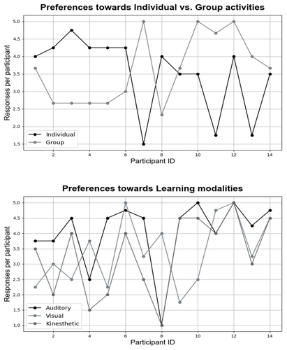
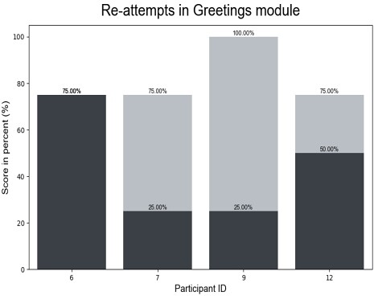
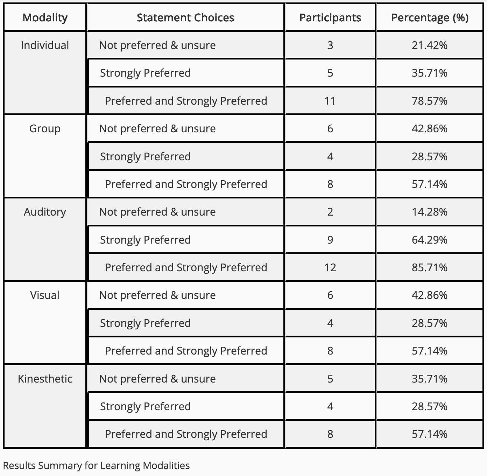
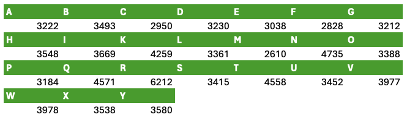

Background & Literature
Computer vision for sign-language learning sits at the intersection of child-computer interaction and real-time gesture recognition. This section summarizes recent research on who we design for (children and classrooms), and how systems are built (datasets, pipelines, models).
“Results indicate high engagement and superior learning outcomes… with a preference for collaborative and teacher-instructed activities.” [Rahman et al., 2024]
- Pedagogy & UX for kids — What motivates early learners and how should lessons be delivered? (cross-country study)
- Vision & ML pipelines — What data and model choices enable responsive, accurate feedback? (real-time ASL system)


What the Classroom Study Tells Us
Rahman et al. designed and tested a web-based sign-language platform with 28 children (ages 6-7) in Finland and India, combining lessons, practice modules, and a learning-style survey (PLSPQ).


Design implication: pair CV feedback with spoken prompts and collaborative tasks (teacher-instructed small groups).
“Structured guidance from teachers can optimize the use of technology-assisted learning platforms for children.” [Rahman et al., Design Implications]
What the Real-Time System Tells Us
Cabana proposes a practical recipe for real-time ASL learning: build a robust alphabet dataset, benchmark several CNN families, then deploy the best model in a lightweight OpenCV loop for on-screen feedback.


“We studied several neural network classification models and implemented the one with the best performance metrics.” [Cabana, 2024]
Takeaway for this tutorial: begin with static signs (alphabet, numbers) using keypoints or image crops; once accuracy/latency are solid, graduate to dynamic signs with temporal models.
Synthesis: From Findings to Design
- Content & pacing: short modules with immediate feedback encourage re-attempts and self-correction.
- Modality pairing: combine on-screen visuals with simple audio prompts (aligns with auditory preferences).
- Social setting: favor small-group practice with teacher facilitation for early learners.
- CV architecture: start with an alphabet dataset; compare compact CNNs for real-time feedback.
Using the Figures (Licensing Notes)
Rahman et al. paper is CC BY 4.0 in the University of Oulu repository—cite the paper and include a credit line under each reused figure.
Cabana’s arXiv HTML indicates CC BY-NC-SA 4.0—credit and avoid commercial use. Re-draw simple versions if needed for clarity in class.